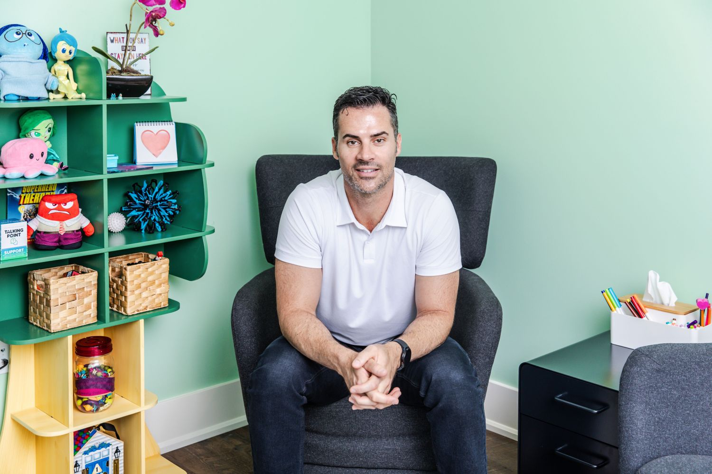

Services
Psychotherapy for
youth and adults
Individual therapy tailored to you — in person in Burlington or by secure video across Ontario.
Start here
The free meet & greet
The best first step for almost everyone. A short, relaxed consult call so you can get a feel for how I work and decide, without any pressure, whether to go ahead. It’s free, and there’s no obligation to book anything after.
Book your free meet & greet
Free · no obligationSessions & formats
A rhythm that fits your life
Every journey starts with an intake, then continues with sessions sized to your needs. (I don’t currently offer couples therapy.)
Intake — Youth (13–18)
First appointment
A thorough, welcoming first session to understand what your teen is facing and shape a plan that fits them. Parents are involved in the way that’s most helpful.
Intake — Adults (19+)
First appointment
We map out what brought you here, what you’re hoping for, and how we’ll get there together — the foundation for everything that follows.
Individual session
50 minutes · the standard hour
The most common format: enough time to go deep on what matters while keeping steady, sustainable momentum week to week.
Flexible lengths
25, 50 or 80 minutes
Shorter check-ins or longer, deeper sessions — we choose the length that suits the work and your schedule.
What I help with
Common reasons people reach out
If you don’t see your exact situation here, it’s still worth a conversation.
- Low mood & depression
- Anxiety & worry
- Stress & burnout
- Relationship challenges
- Grief & loss
- Trauma & PTSD
- OCD
- Borderline personality disorder (BPD)
- Childhood attachment wounds
- Substance use
- Self-esteem & identity
- Life transitions
Two ways to meet
In person or online — your choice
Meet at the clinic
384 Guelph Line — a calm, comfortable space designed to feel safe for both adults and younger clients.
Secure video
Wherever you are in the province, we can meet by confidential video — the same care, from the comfort of your own space.
Not sure which is right for you?
Let’s figure it out together on a free meet & greet.
Book a free call